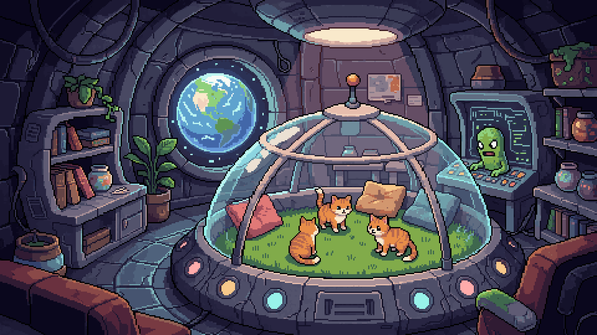

클릭하고, 먹이고, 키우기
캔을 클릭해 먹이를 만들면 슬라임이 고양이로 위장합니다. 고양이는 먹을수록 통통해지다가, 풍선처럼 부풀어 터지며 새 슬라임을 낳습니다.

Overview
지구를 정복하려는 슬라임 외계인은, 슬라임 모습 그대로는 인간에게 배척당한다는 것을 깨닫습니다. 그래서 세운 작전이 고양이로 위장해 지구에 침투하는 것. 플레이어는 UFO 안의 작전실에서 이 침략 작전을 운영합니다.
캔을 클릭해 먹이를 만들고, 슬라임을 고양이로 키우고, 합치고, 지구로 보내는 사이 — 지도 위에는 고양이에게 정복된 지역이 하나둘 늘어납니다. 귀여움 뒤에 숨은 가벼운 블랙 코미디가 이 게임의 매력입니다.
Key Features
캔을 클릭해 먹이를 만들면 슬라임이 고양이로 위장합니다. 고양이는 먹을수록 통통해지다가, 풍선처럼 부풀어 터지며 새 슬라임을 낳습니다.
같은 등급의 고양이를 합쳐 상위 등급 고양이를 만들고, 워프 장치로 지구에 침투시켜 나라별 정복도를 쌓아 갑니다.
자동 캔, 자동 머지, 자동 침투, 자동 깨우기까지. 후반으로 갈수록 UFO 안의 생태계가 스스로 굴러가는 모습을 지켜보는 재미가 커집니다.
지구를 100% 정복한 뒤에는 타임루프로 침략 데이터를 물려받아, 더 빠르고 다른 방식의 정복 엔딩을 수집합니다.
Gallery
게임의 분위기를 담은 컨셉 아트입니다. 실제 게임 화면과 다를 수 있습니다. 이미지를 누르면 크게 볼 수 있습니다.